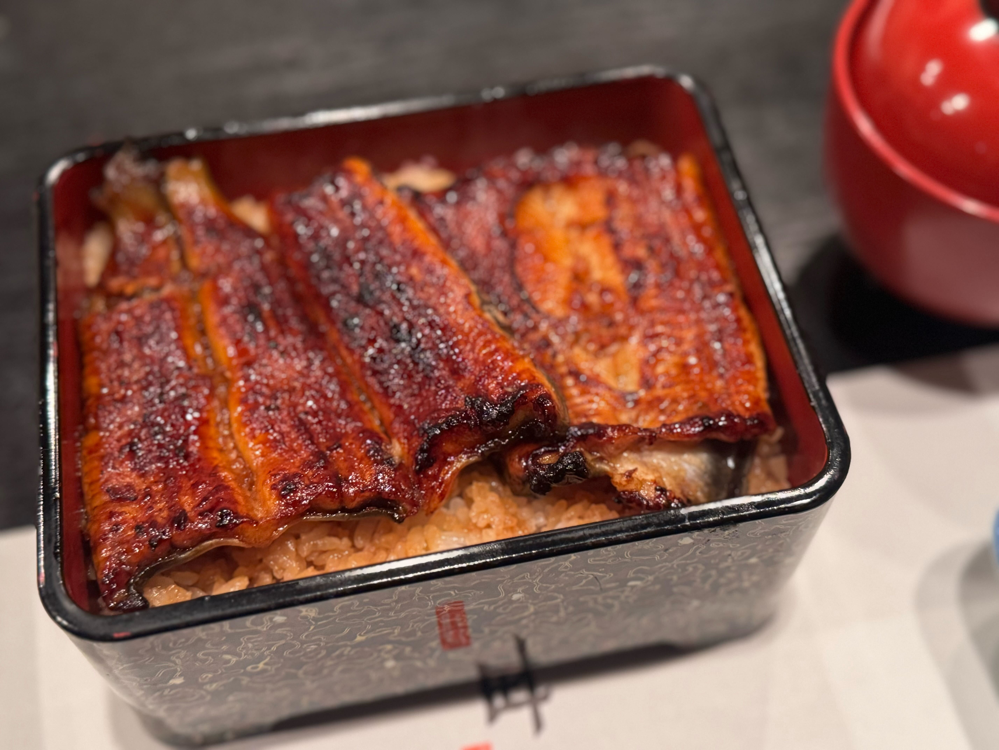
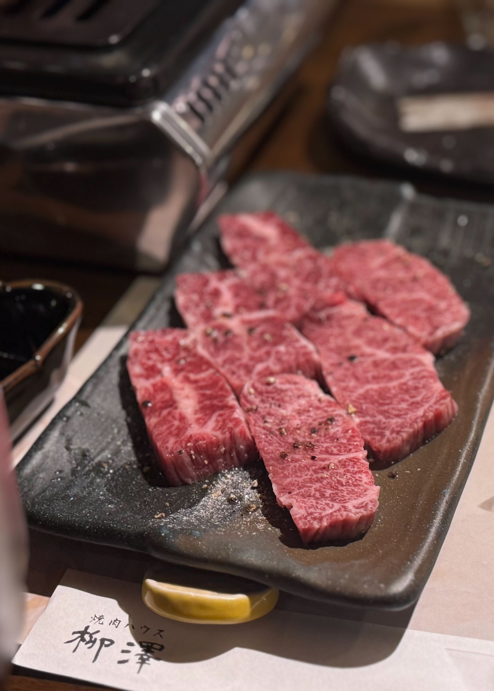

とても上品で繊細な味わい！老舗「うなぎ藤田」でいただく絶品うな重
交流会の打ち上げに、「うなぎ藤田」さんへうなぎを食べに行きました。
ふっくらと香ばしく焼き上げられた鰻は、余分な脂が落ちていて、秘伝のタレともよく合い、あっさりといただけます。
お店の雰囲気もとても上品で、落ち着いた空間の中でゆっくりとうなぎを楽しめました。

===店舗情報===
店名: うなぎ藤田
リンク: 公式ウェブサイト
住所: 静岡県浜松市中央区砂山町３２２−７ ホテルソリッソ浜松 2F
ワインにぴったりの絶品焼肉！「Calvino」
二軒目に訪れたのは「Calvino」という焼肉屋さん。 しっかりと味付けされたお肉をワインと一緒に楽しみました♪
===店舗情報===
店名: 焼肉Calvino
リンク: 公式ウェブサイト
住所: 静岡県浜松市中央区鍛冶町319-14 有楽街アダムビル1F
厳選されたお肉を贅沢にいただく至福のひととき！「焼肉ハウス柳澤」
本日の締めは「焼肉ハウス柳澤」さんへ。
こちらは雌の静岡そだちにこだわっていて、どのお肉もやわらかく、後味もすっきりしていてとても食べやすいです。
特に印象的だったのはタンすじ。
コリッとした歯ざわりのあとに旨みがじんわり広がっていく、噛むほどにおいしい一品でした。
ほかのお肉もどれも絶品で、とろけるように口の中からすっと消えていきます。
お腹いっぱいのはずなのに、つい次の一枚に手が伸びてしまうような焼肉でした。
締めにいただいたカレーもとてもおいしく、大満足で終えることができました。

===店舗情報===
店名: 焼肉ハウス柳澤
リンク: 食べログページ
住所: 静岡県浜松市中央区田町331-13 田町小澤ビル 3F